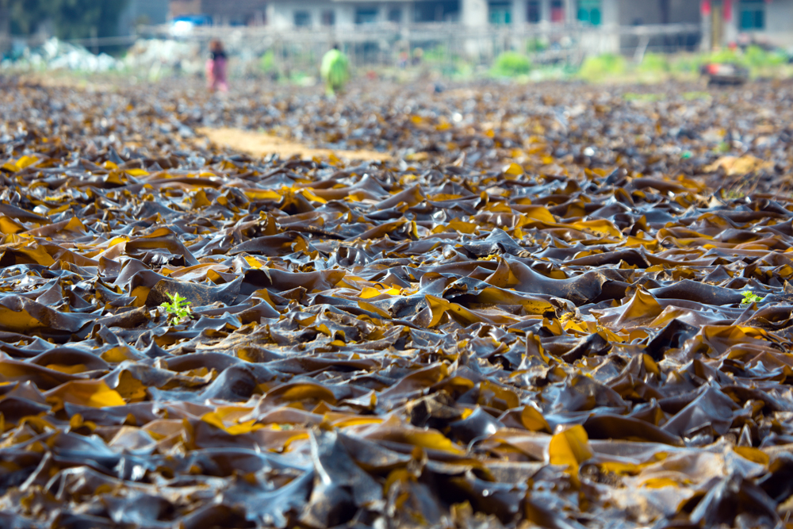
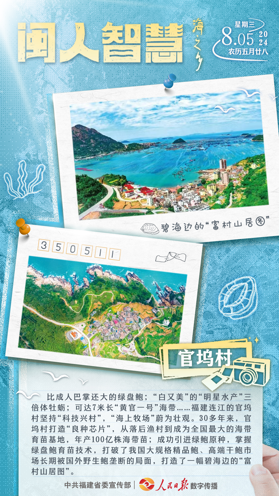
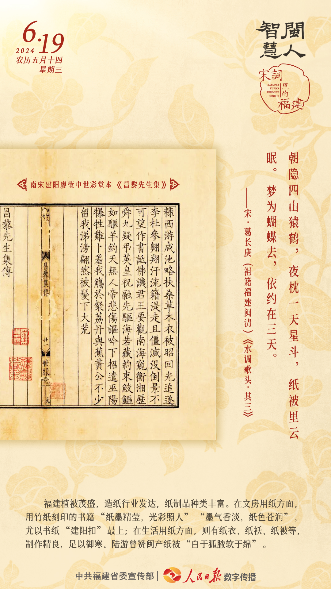
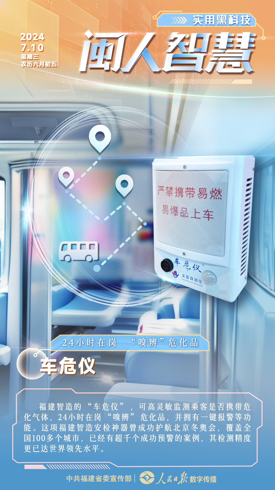
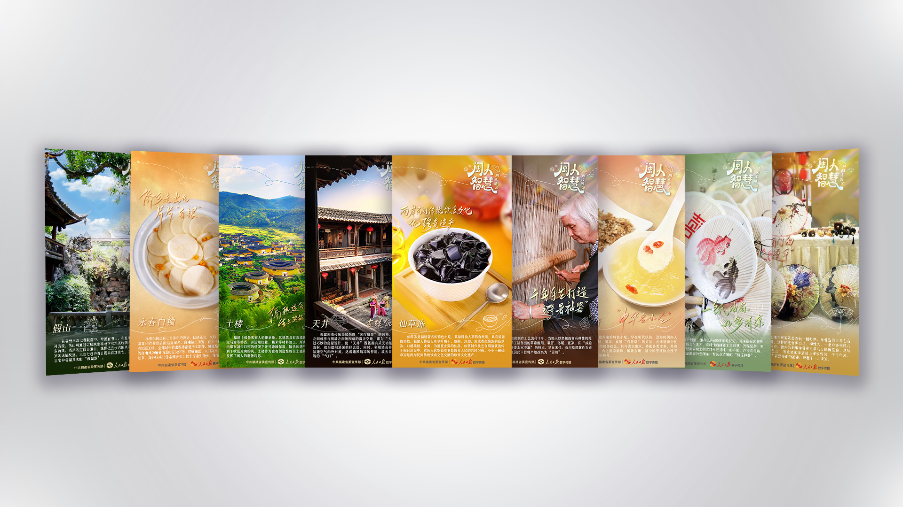
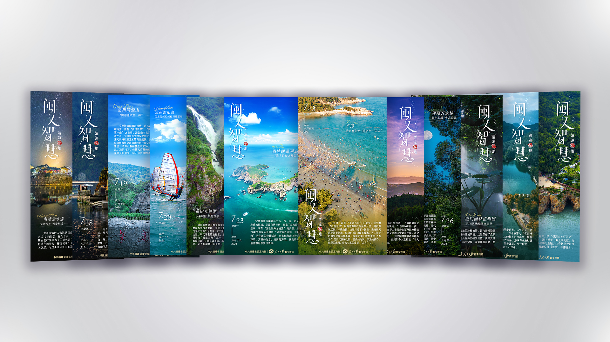
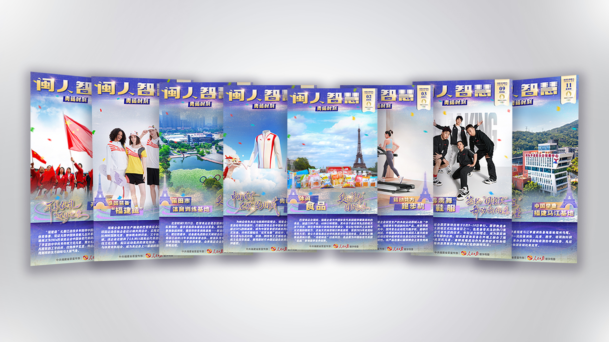
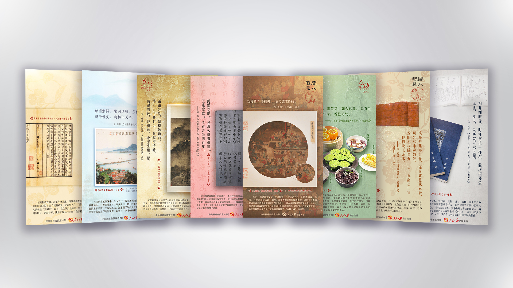

从政务内容
到可传播信息
把政策、产业与热点议题转化为清晰、有秩序且有情绪张力的视觉内容。支持日更节奏下的跨平台传播。
- 项目机构
- 人民日报数字传播（福建）有限公司
- 承担角色
- 内容设计实习生
- 工作流程
- 信息梳理 → 主题策划 → 视觉转译 → 成稿送审 → 平台发布
- 优秀实习生
- 实习期间获评“优秀实习生”
01
海之乡一封海边来信
把产业故事写得真实，也有温度
项目说明
从山海环境、村庄生活与海洋产业中提取视觉线索。保留新闻所需的日期、地点与产业信息，并通过相纸、手写标记和书信结构，让官坞村成为一处可以被感知的真实地方。
我的职责

04 / VISUAL TRANSLATION
01找到空间关系山、村庄、海
02借用书信语言相纸、日期、手写标记
03留下新闻信息地点、产业、事实
04增加生活气息海水蓝、纸张白、暖黄色

02 / SELECTED POSTERS
内容不同，画面也换一种说法
先判断内容的语气，再决定图像、字体与信息的轻重。四张作品分别回应传统文化、地域文旅、公共议题和科技应用。

古籍原图与竖排文字，保留宋词的阅读气息。
让山水成为主角，用纵向标题带出清凉感。

减少装饰，把注意力留给警示信息。

放大产品主体，用图形说明功能与使用场景。
03 / SERIES SYSTEM
系列模板，让高频内容保持一致
点击标签切换系列总览具备将高频设计需求转化为稳定视觉体系的能力：提炼共性、建立可复用的设计流程，并针对不同内容灵活调整画面，在持续输出中保持系列一致性与设计效率。



